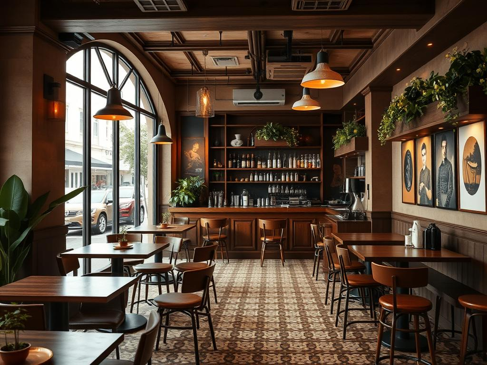
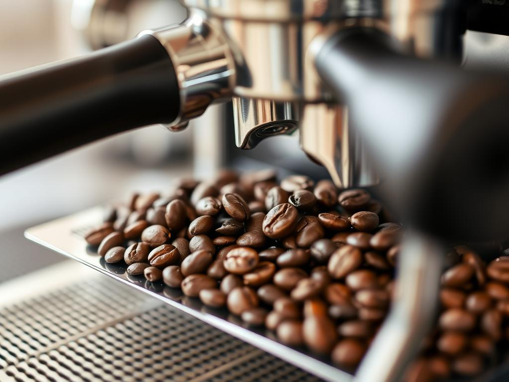

Добро пожаловать в Dark Brew

Dark Brew - это не просто кофейня, это место, где рождаются кофейные
традиции. У нас вы найдёте идеальную атмосферу для работы, отдыха или
приятной беседы.
Наши бариста - настоящие мастера своего дела, которые приготовят для
вас кофе именно так, как вы любите. Мы тщательно следим за
температурой воды, временем экстракции и другими параметрами, чтобы
каждый глоток приносил удовольствие.
В нашем меню вы найдёте как классические варианты кофе, так и
авторские напитки, созданные специально для ценителей. А наши десерты
идеально дополнят ваш кофейный опыт.
Приходите к нам и почувствуйте настоящий вкус кофе в уютной атмосфере
Dark Brew!
О нашей кофейне

В Dark Brew мы используем только лучшие кофейные зёрна, отобранные у
проверенных поставщиков со всего мира. Наша философия - качество
превыше всего.
Мы сотрудничаем с небольшими фермерскими хозяйствами, которые
выращивают кофе с любовью и заботой. Это позволяет нам предлагать вам
уникальные вкусы и ароматы.
Все наши бариста проходят строгое обучение и регулярно повышают
квалификацию. Мы знаем всё о кофе и с радостью поделимся с вами нашими
знаниями.
В приготовлении напитков и блюд мы используем только свежие,
качественные продукты. Наши десерты готовятся ежедневно, а сиропы и
топпинги - собственного производства.
Dark Brew - это место, где каждая деталь продумана для вашего комфорта
и удовольствия от кофе.